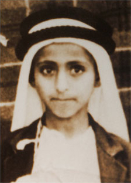

His Highness Sheikh Dr. Sultan bin Muhammad bin Saqr bin Khalid bin Sultan bin Saqr bin Rashid Al Qasimi was born in Sharjah on Sunday, 2nd July 1939 AD, 14th Jumada-I 1358 Hijri.
His mother is Sheikha Maryam bint Sheikh Ghanem bin Salim bin Abdullah bin Saeed bin Sabt bin Matar bin Sultan bin Faris bin Shahwan Al Shamsi.
His Highness has four brothers and two sisters: Sheikh Khalid, Sheikh Saqr, Sheikh Abdul Aziz, Sheikh Abdullah, Sheikha Shiekha and Sheikha Naema.
His Highness also has half-brothers and sisters: Sheikh Rashid, Sheikh Humaid, Sheikh Ali, Sheikha Mouza, Sheikha Alia, Sheikha Ghaya, Sheikha Noura, Sheikha Aisha and Sheikha Azza.
His senior wife was Sheikha Moza bint Salim bin Mohammed bin Manee Al Falasi (her grandmother, Sheikha Mouza bint Sheikh Ghanem bin Sheikh Salim Al Shamsi, is His Highness’s aunt), and with whom he had two children: his son, Sheikh Mohammed (May God rest his Soul), who passed away on 3rd April 1999, aged 24, and his daughter, Sheikha Azza.
His Highness also married Her Highness Sheikha Jawaher bint Sheikh Mohammed bin Sultan bin Saqr Al Qasimi, with whom he has three daughters and one son: Sheikha Bodour, Sheikha Noor, Sheikha Hoor and Sheikh Khalid (May God rest his Soul), who passed away on 1st July 2019, aged 40.
His Highness grew up with a deep-rooted love for his country and was able to expand his knowledge through broad education. During his early childhood he became enamoured of the history of his country and was taught the Holy Quran by Sheikh Faris bin Abdul Rahman. In September 1948, at the age of 9 years, he enrolled in Al Eslah Al Qasimia School. In 1954, His Highness enrolled in an English private school to learn the English language. He completed his elementary and secondary education between Sharjah and Kuwait. In 1965, he travelled to Cairo to complete his higher education, enrolling in the College of Agriculture at Cairo University.
For two years, particularly from February 1961 to September 1963, he taught English and Mathematics at Sharjah Industrial School.
In 1965, His Highness chaired the Municipality and, after his graduation in 1971, he managed the Ruler’s office in Sharjah. Following the establishment of the United Arab Emirates on 2nd December 1971, the ministers’ council was formed and His Highness became the UAE’s Minister of Education.
On 25th January 1972, 9th Dhi Al-Hijja 1391 (Arafa Day) His Highness Sheikh Sultan bin Muhammad Al Qasimi became the Ruler of Sharjah after its former ruler, Sheikh Khalid bin Mohammed Al Qasimi, was assassinated in an attempted coup by loyalists of Sheikh Saqr bin Sultan Al Qasimi. His Highness Sheikh Sultan became a member of the UAE Supreme Council at the age of 32 years.
His Highness is the 18th Ruler of the Emirate of Sharjah in a chain of Al Qasimi Rulers since 1600 AD.
He has been at the forefront of the emirate’s cultural, economic and social development and also played a significant role in promoting cultural interaction and dialogue among nations at local, regional and international levels.
 History
Education
Publication
Locations
History
Education
Publication
Locations